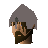

White Knights' Castle
Location at 2961, 3345 · Kingdom of Asgarnia
Open on the world map → Open in knowledge graph → Below: White Knights' Castle (underground)
NPCs
| NPC | Level | Spawns | Notable drops |
|---|---|---|---|
| 36 | 26 | Coins, Mind rune, Iron bar, Herb drop table | |
| 21 | 8 | Coins, Steel arrow, Iron dagger, Body talisman | |
| 2 | 5 | Bolt, Wizards hat, Hammer, Ball of wool | |
| 2 | 1 | Coins, Herb drop table, Bolt, Fishing bait | |
| 2 | 1 | Coins, Herb drop table, Bolt, Fishing bait | |
| 1 | 5 | Feather | |
| 1 | 2 | ||
| 4 | |||
| 1 | |||
| 2 | |||
| 1 | |||
| shop | 1 | ||
| 1 | |||
| shop | 1 | ||
| shop | 1 | ||
| shop | 1 | ||
| Sir Amik Varze | 1 | ||
| 1 | |||
 Squire | 1 | ||
| shop | 1 |